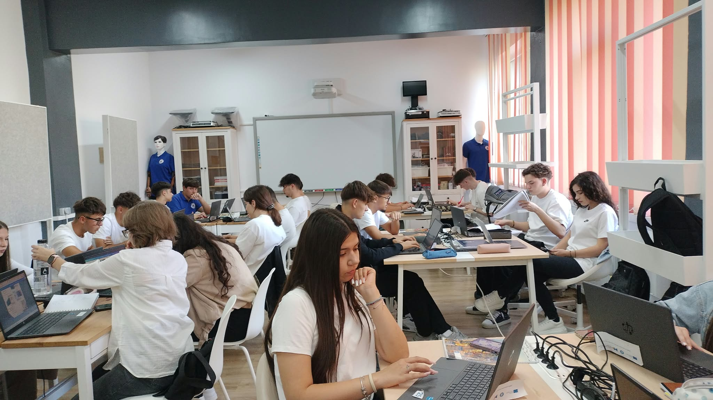
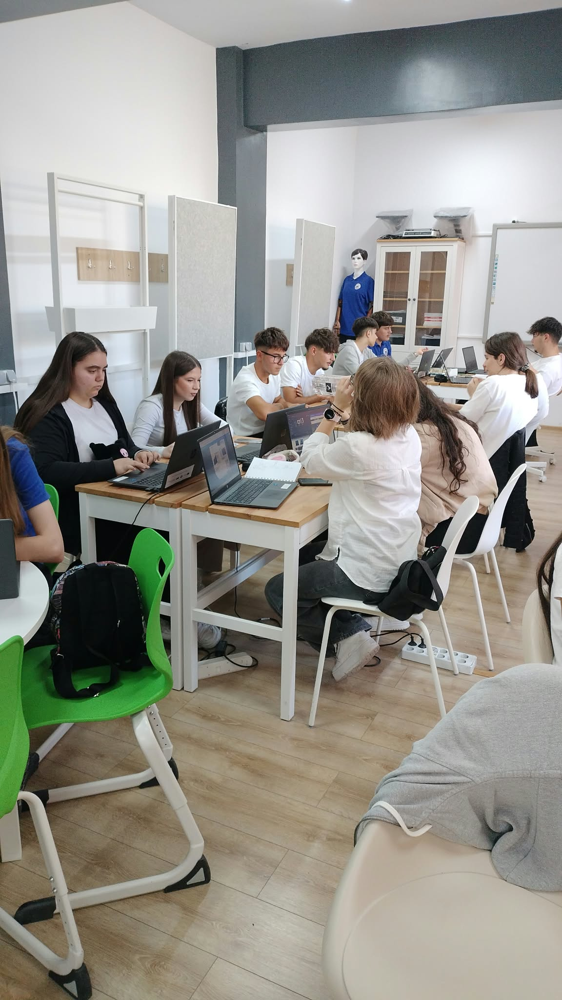

Calitate
Alegem cu atenție fiecare produs din ofertă, astfel încât clienții noștri să primească echipamente de încredere.
F.E. MK Tech S.R.L. este o firmă de exercițiu care oferă echipamente IT și de birotică: monitoare, periferice, unități PC, laptopuri și consumabile și rechizite, la prețuri corecte și cu o selecție atentă a produselor.

F.E. MK Tech S.R.L. a fost înființată în anul 2012, ca firmă de exercițiu în cadrul Colegiului Economic „Mihail Kogălniceanu” din Focșani. În acest an școlar, firma este continuată de o nouă echipă formată din elevii clasei a XI-a A, sub coordonarea doamnei profesoare Mioara Botezatu.
Am ales domeniul electronicelor și al biroticii pentru că este un sector aflat mereu în mișcare, cu nevoi reale și constante în orice birou modern. Am construit oferta de produse pornind exact de la aceste nevoi: monitoare, periferice, unități PC, laptopuri și consumabile și rechizite, alese cu atenție pentru un raport bun calitate-preț.
Suntem la început de drum cu această echipă, iar obiectivul nostru pentru acest an școlar este să participăm la târgurile firmelor de exercițiu, să dezvoltăm parteneriate și să creștem constant, prin seriozitate și muncă în echipă.
2012
Anul înființării
30
Produse în catalog
5
Categorii de produse
Misiunea noastră
Misiunea noastră este să oferim echipamente electronice și de birotică de calitate, la prețuri corecte, construind în același timp o echipă solidă, cu obiective clare și o dezvoltare continuă.
Alegem cu atenție fiecare produs din ofertă, astfel încât clienții noștri să primească echipamente de încredere.
Ne respectăm clienții și partenerii prin informații corecte, prețuri clare și livrare la termenul promis.
Lucrăm împreună, ca o echipă formată din elevii clasei a XI-a A, pentru a duce MKTech mai departe.
MKTech este condusă de o echipă de 28 de elevi ai clasei a XI-a A, coordonați de doamna profesoare Mioara Botezatu.
Momente din activitatea firmei de exercițiu MKTech.



Cum este organizată echipa MKTech, pe departamente.